first shore / 01 / first shore welcome beacon / day / close
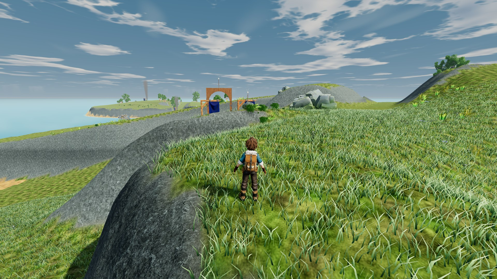
Before · original production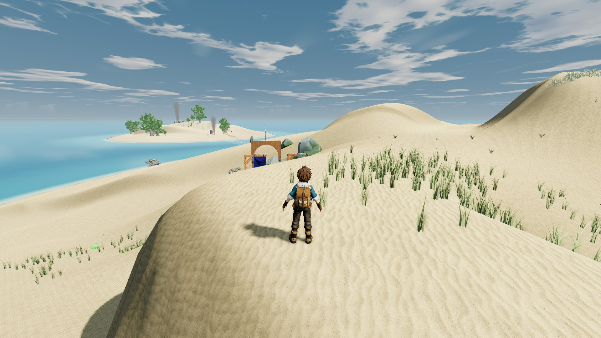
Current candidate · revised dunes, Shellwatch passage and visible Sluice pumpsSame XZ [35.707, 98.104] · ground Y 23.50 → 23.50 m
gull rest / 20 / gull rest beach / day / close
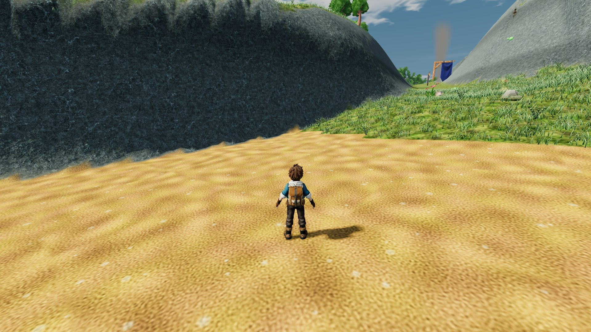
Before · original production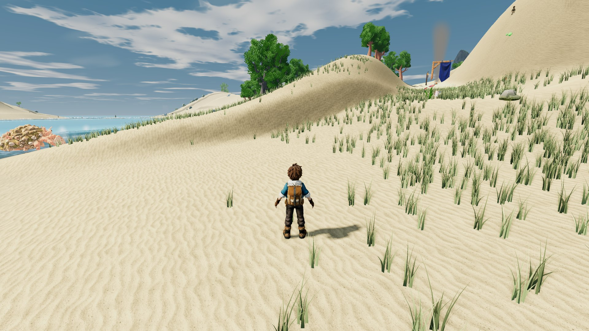
Current candidate · revised dunes, Shellwatch passage and visible Sluice pumpsSame XZ [-56.825, 789.065] · ground Y 1.57 → 1.57 m
shellwatch / 07 / shellwatch rescue jetty / day / close
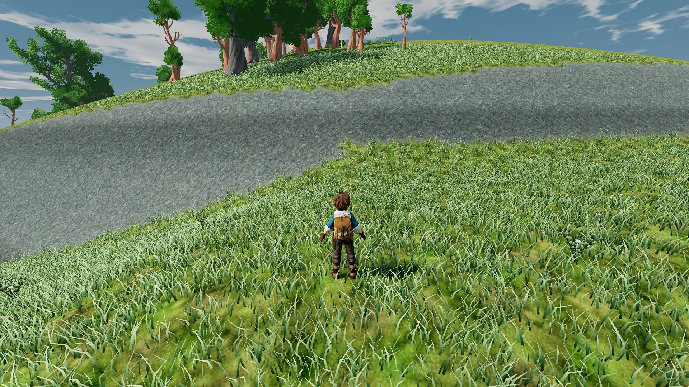
Before · original production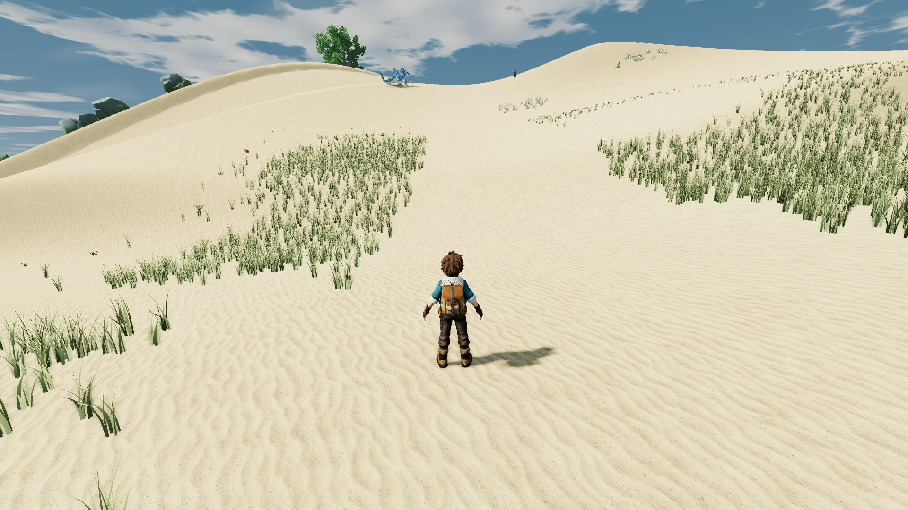
Current candidate · revised dunes, Shellwatch passage and visible Sluice pumpsSame XZ [267.004, 1006.349] · ground Y 31.75 → 16.67 m
sluice isle / 13 / sluice isle twin pumps / day / close
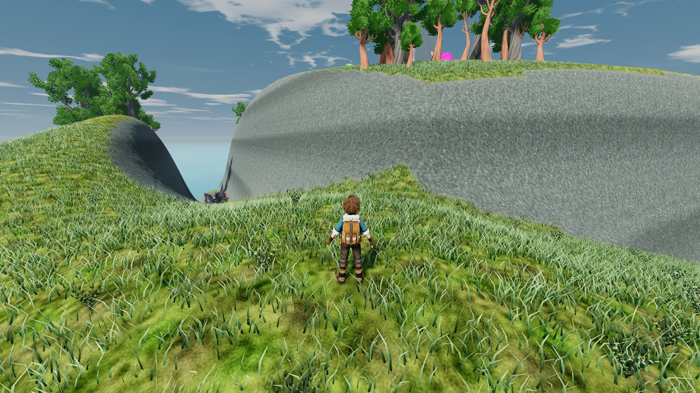
Before · original productionCurrent candidate · revised dunes, Shellwatch passage and visible Sluice pumpsSame XZ [905.1, 2864.564] · ground Y 93.20 → 34.29 m
brine steps / 06 / brine steps east beach / walk 03 day
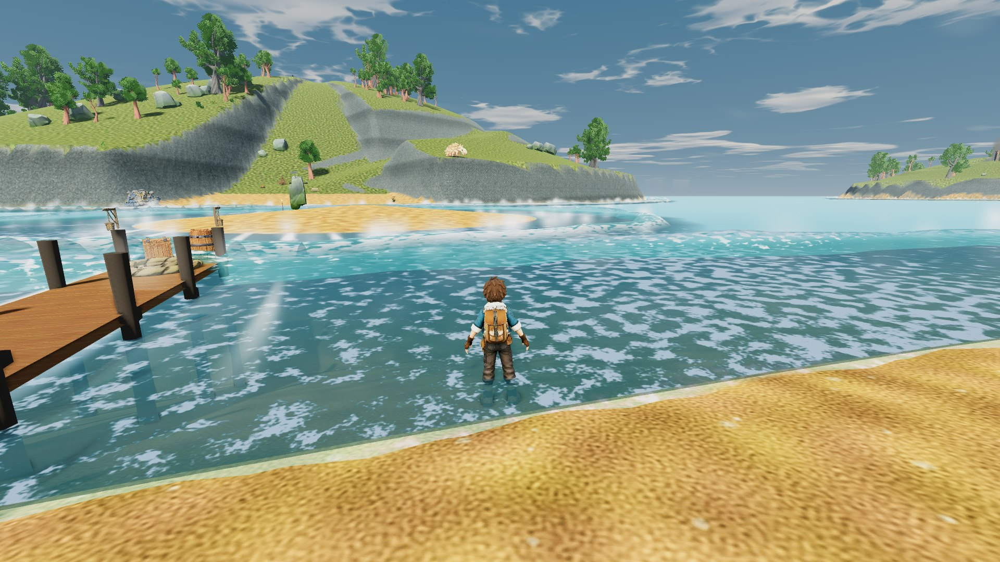
Before · original production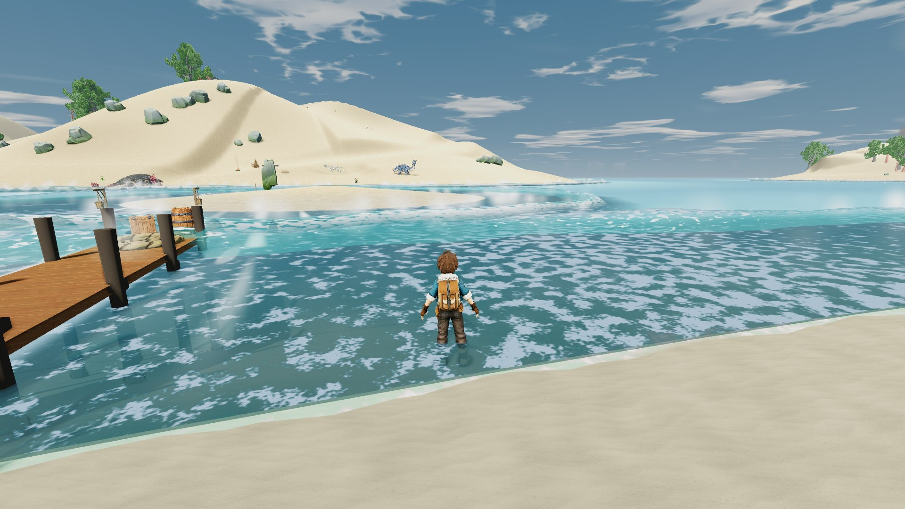
Current candidate · revised dunes, Shellwatch passage and visible Sluice pumpsSame XZ [362.493528366089, 853.999055862427] · ground Y -0.28 → -0.28 m
first shore / 02 / first shore horizon stones / route day
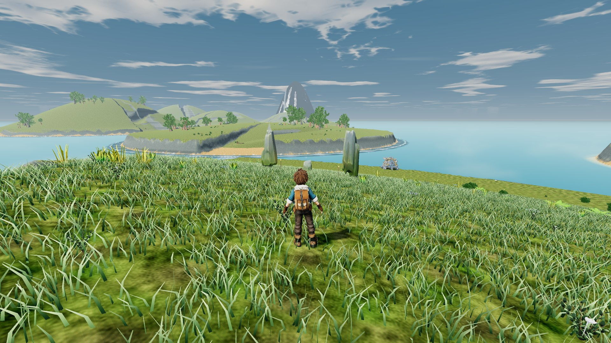
Before · original production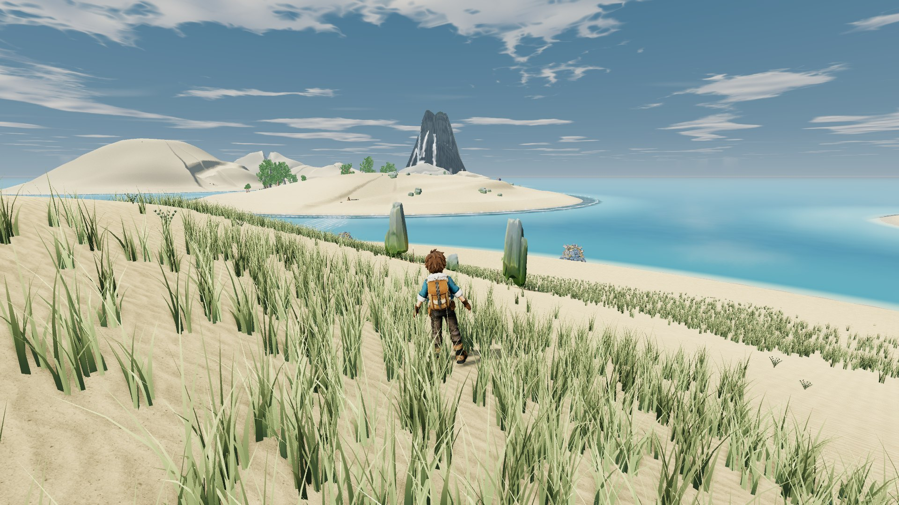
Current candidate · revised dunes, Shellwatch passage and visible Sluice pumpsSame XZ [-63.6360015869141, 75.8379974365234] · ground Y 25.54 → 18.33 m
salt crown / 11 / salt crown tide shrine / walk 01 day
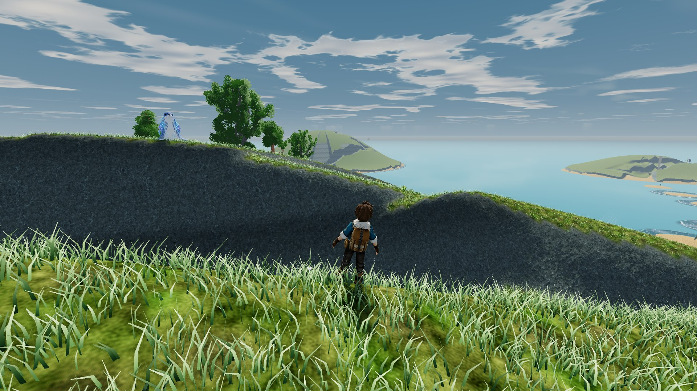
Before · original production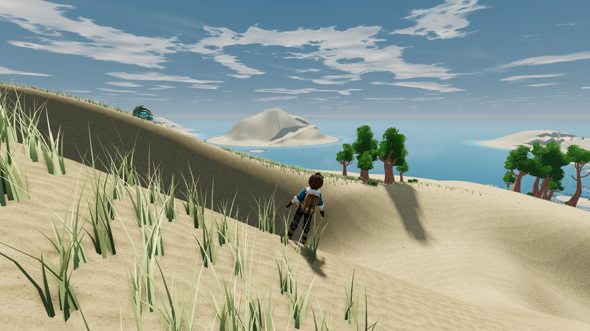
Current candidate · revised dunes, Shellwatch passage and visible Sluice pumpsSame XZ [183.767732620239, 2331.84829080105] · ground Y 91.24 → 88.71 m
sluice isle / 13 / sluice isle twin pumps / route day
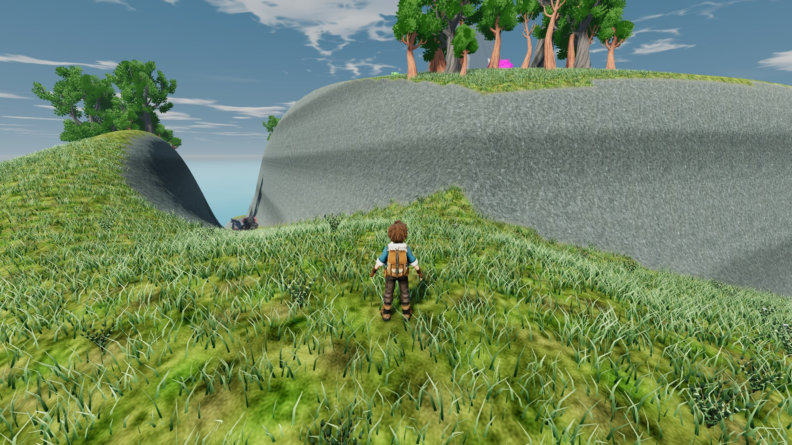
Before · original production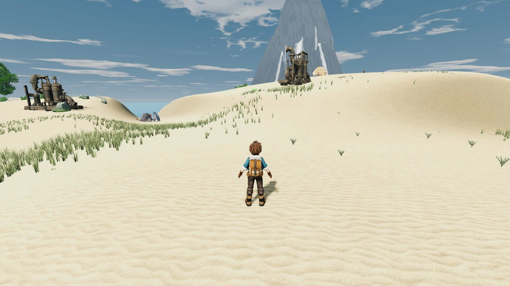
Current candidate · revised dunes, Shellwatch passage and visible Sluice pumpsSame XZ [905.099975585938, 2864.56396484375] · ground Y 93.20 → 34.29 m